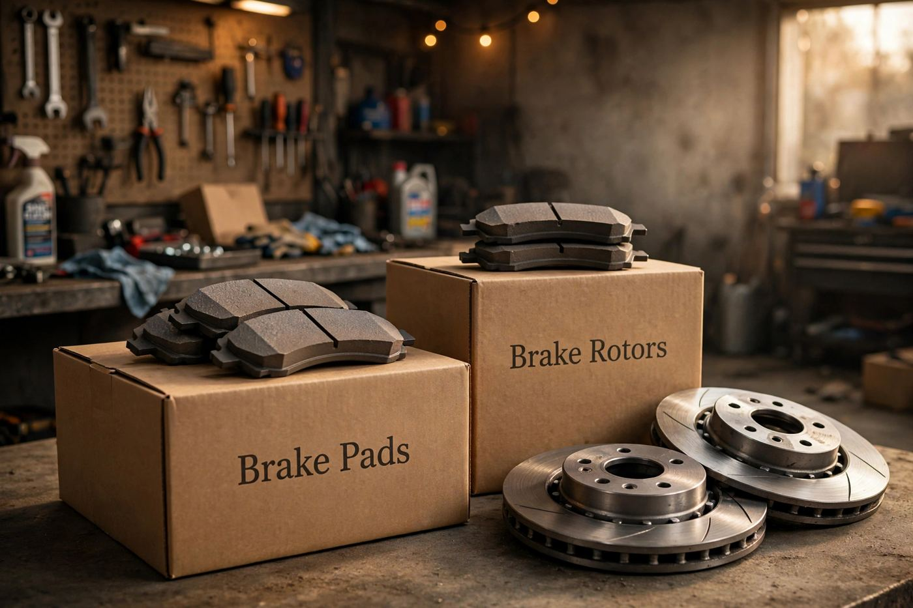

Guides › Brake pads
Best Brake Pads: Ceramic vs Semi-Metallic vs Organic
Squeaking, grinding, or a soft pedal? It may be time for new brake pads. Here's how the three main types compare, so you can choose the right one for how you drive.
I may earn a small commission if you buy through links on this page, at no extra cost to you.

#1 Best overall: ceramic brake pads
Top pickQuiet, very little brake dust, and long-lasting. The most comfortable choice for daily driving and stop-and-go traffic.
Key trade-off: quieter and cleaner, but they cost more.
#2 Best for trucks and towing: semi-metallic pads
Handle heat very well, so they're good for heavy vehicles, towing, and mountain driving.
Key trade-off: strong and cheaper, but noisier with more dust.
#3 Best budget: organic brake pads
The lowest price and soft on rotors. Fine for light, gentle driving.
Key trade-off: cheapest, but they wear out faster.
Before you buy
- Always search with your car's year, make, and model so the pads fit.
- Replace pads on both front wheels (or both rear wheels) at the same time.
- If you hear grinding metal, check your rotors too.